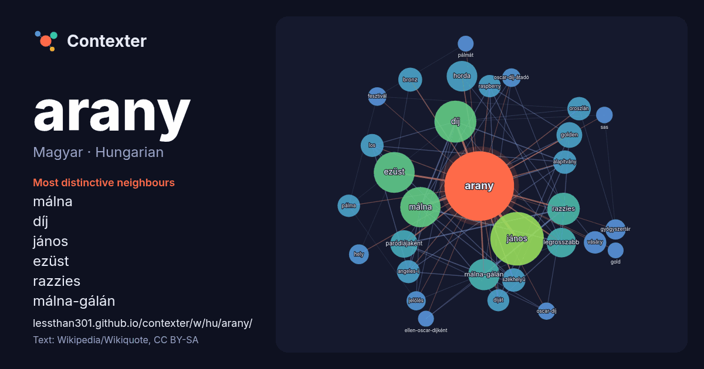

Magyar · Hungarian · word of the day list
arany
“gold” · The words found around it in 1133 instances from Hungarian Wikipedia, Wikiquote.

Most distinctive neighbours
- málna 66×
- díj 59×
- jános 57×
- ezüst 54×
- razzies 44×
- málna-gálán 42×
- horda 39×
- legrosszabb 35×
- paródiájaként 33×
- golden 27×
- székhelyű 23×
- bronz 23×
- oroszlán 23×
- angeles-i 23×
- raspberry 22×
- vásáry 22×
- pálma 22×
- alapítvány 19×
- díját 19×
- los 19×
× = how many times more often than in general Hungarian Wikipedia text.
Most frequent neighbours
- jános 125
- díj 77
- ezüst 73
- málna 71
- razzies 46
- málna-gálán 43
- horda 41
- legrosszabb 38
- magyar 35
- paródiájaként 33
- golden 29
- bronz 25
- alapítvány 24
- oroszlán 24
- székhelyű 24
- angeles-i 23
- los 23
- pálma 22
- raspberry 22
- vásáry 22
In context
- Az arany a természetben elemi állapotban előforduló, a történelem kezdetei óta ismert, jellegzetesen sárga nemesfém. Rendszáma 79, vegyjele Au. Latin Wikipedia snippets · Arany (kémiai elem)
- Az Arany Pálma (franciául: Palme d'or) a Cannes-i fesztivál legnagyobb értékű díja, melyet a hivatalos válogatás nagyjátékfilm versenyének győztes alkotásának Wikipedia snippets · Arany Pálma
- Arany János (Nagyszalonta, 1817. március 2. – Budapest, 1882. október 22.) magyar költő, tanár, lapszerkesztő, a Kisfaludy Társaság igazgatója, a Magyar Wikipedia snippets · Arany János (költő)
- Az Arany Málna díjat (angolul: Golden Raspberry Award, vagy röviden Razzies ill. Razzie Award, magyar szabad fordításban gyakran emlegetik Citrom-díj Wikipedia snippets · Arany Málna díj
- Arany (románul: Uroi) falu Romániában, Erdélyben, Hunyad megyében. Piskitől két kilométerre, a Maros északi partján, az Erdélyi Érchegység lábánál fekszik Wikipedia snippets · Arany (település)
- A 25. Arany Málna-gálán (Razzies) – egyfajta ellen-Oscar-díjként – az amerikai filmipar 2004. évi legrosszabb filmjeit, illetve azok alkotóit díjazták Wikipedia snippets · 25. Arany Málna-gála
- A Magyar Arany Érdemkereszt a Magyar Érdemkereszt legfelső fokozata. 2011-ig Magyar Köztársasági Arany Érdemkeresztnek nevezték. A független és demokratikus Wikipedia snippets · Magyar Arany Érdemkereszt
- A 28. Arany Málna-gálán (Razzies) – egyfajta ellen-Oscar-díjként – az amerikai filmipar 2007. évi legrosszabb filmjeit, illetve azok alkotóit díjazták Wikipedia snippets · 28. Arany Málna-gála
More Hungarian words
Precomputed on 2026-10-09 with default settings (±5 words, medium corpus). The interactive map can refresh it with live data.